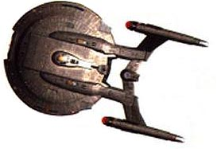
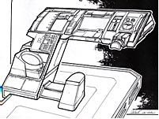
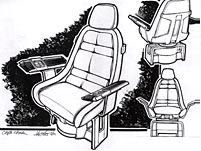
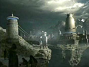
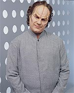
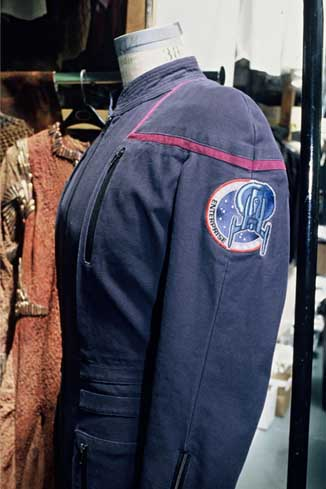
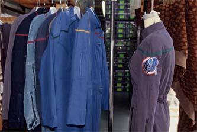
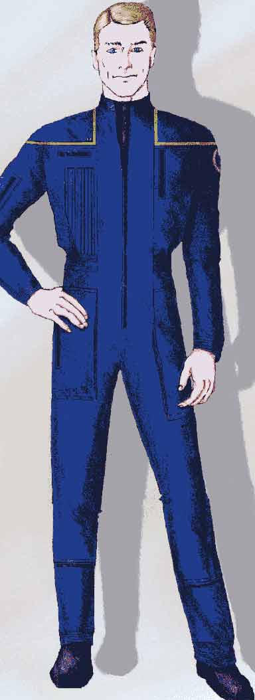
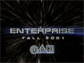
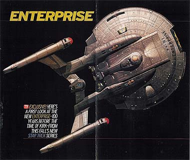

|
Capítulo
3 - Estratégias de sucesso
Como criar a
estética do século 22 e decolar com a série
Quando Rick Berman e Brannon Braga
aceitaram a incumbência de escrever o próximo capítulo
televisivo da história de Jornada nas Estrelas, não
bastava apenas que fosse mais um, mas precisava ser algo que desse
ao franchise um novo fôlego, após as curvas decrescentes de audiência
que começaram quando A Nova Geração saiu do ar e não
pararam até a conclusão de Voyager.
Além do mais, a dupla se recusava terminantemente a produzir
"mais do mesmo", ou seja, uma série que fosse
ambientada e escrita no estilo do que havia sido feito pelos dois
até então. Ambos se manifestaram muito claramente nesse sentido,
não deixando dúvidas quanto à necessidade de colocar novos
termos para a premissa da série.
Brannon Braga foi bem enfático ao comentar a questão. "Eu
precisava de algo novo, fresco. Como roteirista, não acho que
conseguiria escrever mais uma linha de diálogo para Voyager.
Eu realmente já estava farto do século 24." Para o
produtor, a nova série tinha um sabor ainda mais especial. "É
muito mais gratificante e empolgante estar em algo desde o início",
diz. "E estou muito feliz que não tivemos de correr com o
show."
Com tamanha vontade de escrever coisas diferentes, não foi difícil
estabelecer o que seria o novo programa. Quem melhor define, de
forma simplória, o processo criativo da dupla é o próprio
Braga. "Eu gostaria de poder dizer que [o processo de criação]
foi em uma câmara escura com um monte de hologramas em volta, mas
não foi diferente de duas pessoas falando sobre o mercado de ações
ou falando sobre como elas vão construir uma ponte, ou qualquer
outra coisa que pessoas fazem em negócios --exceto que estávamos
falando sobre viagem no tempo e Klingons", diz.
"Nós meio que sentamos e resolvemos as coisas, sobre os
personagens, sobre os tipos de história que queríamos contar.
Realmente usamos bem o nosso tempo quando criamos a série.
Basicamente nos encontramos todos os dias por dois anos, e criamos
sete personagens e uma história para o piloto. Gastamos nosso
tempo escrevendo o roteiro do piloto. Durante nossas sessões, ficávamos
juntos, tomávamos café com biscoitos, e só sentávamos e escrevíamos
o dia todo. Nada especial na verdade."
Uma vez definida a grande novidade, uma série ambientada no século
22, cem anos antes do capitão Kirk, Berman e Braga tiveram que
decidir como atacar dois fronts que precisariam se adaptar ao novo
estilo "Jornada" de ser. O primeiro, o de produção,
que consistia na criação de novo visual para série, seja em
termos de maquiagem, figurino, design de cenários, música, ou
outro estímulo audiovisual que iria parar na telinha no produto
final.
Nesse aspecto específico, a dupla achou melhor investir na prata
da casa, que conhece o franchise e sua história de cor e de trás
para diante. Michael Okuda (arte de cenário), Herman Zimmerman
(design de produção), John Eaves (ilustrador sênior), Doug
Drexler (ilustrador júnior), Michael Westmore (maquiagem) e
Robert Blackman (figurino) eram todos velhos conhecidos de Jornada
nas Estrelas, tendo trabalhado tanto na telinha quanto na
telona. Eles ficaram responsáveis pelo novo visual da série, e a
resposta do público aos resultados foi quase 100% positiva.
John Eaves criou o exterior da Enterprise NX-01, a nave do
seriado, com base em outra criação sua, a USS Akira, vista
brevemente em uma batalha do filme "Jornada nas Estrelas -
Primeiro Contato".

Por muito tempo, esse foi o detalhe
mais controvertido da produção, tanto pelo fato de a nave
parecer mais moderna que a da série original, embora devesse ser
sua predecessora, quanto por ser muito semelhante à Akira. Alguns
fãs acharam a semelhança tão ultrajante e tão representativa
da falta de criatividade da equipe de produção que passaram,
jocosamente, a chamar a nave de "Akiraprise".
No fim das contas, as críticas acabaram se dissipando quando a
nave foi divulgada em todos os ângulos, o que demonstrou que a
grande semelhança entre a Akira e a nova Enterprise só saltava
aos olhos quando a nave era vista de cima. Para todas as outras
perspectivas, os dois veículos eram bastante diferentes.
Quanto ao aspecto "moderno" da antiga nave do século
22, não havia nada que pudesse ser feito. Berman dizia que a
equipe toda estava muito dedicada a se manter fiel à "história"
estabelecida, mas enfatizava que licença dramática seria e
precisaria ser tomada. Ele justifica com um exemplo: "Nossos
celulares parecem mais modernos que os comunicadores da série
original".
Aliás, foi esse o espírito com o qual a equipe de produção
encarou o desafio de manter a continuidade, tanto da cronologia
quanto das questões visuais. Braga chegou a declarar que a intenção
era ser "respeitoso à continuidade", mas que esses
detalhes não teriam precedência sobre uma boa história.
Além do mais, Braga comenta o fato de vários "fatos"
do universo de Jornada já terem "prescrevido" no
mundo real, como por exemplo as Guerras Eugênicas, que deveriam
ter acontecido entre 1996 e 1999, mas, como todos sabem, não
ocorreram na verdade.
Visual interno
Os ambientes internos da Enterprise e as características visuais
da tecnologia do século 22 ficaram por conta da equipe coordenada
por Herman Zimmerman --e logo de cara já cativaram o público.
Nada de telas de toque por toda parte, como se viu nas três séries
ambientadas no século 24. Os botões estão de volta à ativa na
NX-01, com interiores que são uma mistura de submarino nuclear do
século 21 com os consoles da Estação Espacial Internacional
(ISS).
 Aliás,
a inspiração para vários dos equipamentos da NX-01 saiu de
objetos do nosso cotidiano. O console do piloto da nave foi
inspirado no de um porsche. O painel inclui até um pequeno
volante! O submarino nuclear subiu à cabeça dos produtores para
dar a impressão de um ambiente mais claustrofóbico e menos
luxuoso que o das naves que viriam nos séculos seguintes.
A equipe chegou até a visitar um submarino da marinha dos EUA com
o objetivo de captar o espírito do lugar. Isso se traduziu de
forma perfeita nos cenários. Apesar de seu estilo retrô, com
relação ao que vimos na série original de Jornada, ninguém
pense que o cenário pareceu saído de um filme de Flash Gordon ou
qualquer produção "B" de ficção dos anos 50. A mais
moderna tecnologia foi empregada nos cenários, que estão
salpicados por monitores de plasma por todos os cantos.
A cadeira do capitão, por exemplo, tem forte inspiração naval.
Quem conta é Jim Mees, um dos decoradores de cenários da série.
"Pegamos uma forma existente, que era na verdade um assento
de embarcação, como uma cadeira de submarino. Adicionamos um braço
articulado com um monitor embutido.
 O
design do assento central, projetado por John Eaves, também tem
seu aspecto funcional. "Da cadeira, o capitão pode ver e
falar com todos na ponte/cenário", diz Mees. "O assento
escorrega de lado a lado para operar todos os controles e para a câmera
filmar além do capitão sem precisar que o capitão/ator saia de
sua cadeira."
Claro, não faltaram também homenagens à Série Clássica.
A estação de T'Pol na ponte tem um visor de luz azul bem
parecido ao que ficava no console de ciências da Enterprise
original, onde Spock costumava se reclinar para olhar. Há
intercoms nas paredes da nave bem parecidos com os clássicos. As
portas fazem o mesmo barulho consagrado na série original. Os
comunicadores voltam a ser no formato "flip", embora
tenham agora um visual mais moderno e bem-acabado que os clássicos.
A idéia foi fazer uma nave mais táctil, cheia de botões,
alavancas e chaves. "Tudo é manual para os atores nesta série",
diz Zimmerman. "As alavancas, chaves, botões e travas, todas
as coisas que você costumava ver em painéis de toque em caixas
pretas em Jornada nas Estrelas, nós estamos agora fazendo
mecanicamente. Não é espaçoso ou luxuoso como as outras séries
de Jornada. Em vez disso, é uma tentativa de fabricar o
futuro mais realisticamente, baseado em aeronaves e espaçonaves
que [pesquisadores] estão desenvolvendo agora."
Mas nem sempre o que se traduz para as telas é o que os atores
vivenciam no set. "Eu diria que uma das coisas mais
frustrantes é que não dá para apertar os botões", diz
Linda Park (Hoshi Sato). "Levou um tempo para acostumar com
os botões de apertar que não podem ser pressionados!"
A engenharia e a sala de transporte são provavelmente os
ambientes mais diferenciados. Além do visual completamente
diferente, os dois locais têm disposições totalmente contrárias
ao que havíamos nos acostumado nas séries anteriores. A câmara
de intermixagem voltou a ser horizontal, depois de passar 21 anos
na vertical, e agora a sala de transporte, que agora tem o tamanho
de um closet, só tem capacidade para teleportar um de cada vez
--e normalmente nenhum dos tripulantes quer se arriscar a ter suas
moléculas espalhadas pelo espaço. Embora seja uma tecnologia já
eficiente no século 22, ninguém confia muito na mais nova
engenhoca criada pelos humanos.
Muitas das mudanças nos cenários foram possíveis porque as
plataformas de estúdio em que Enterprise está sendo
produzida são diferentes das que estavam em uso nas outras séries.
Essa mudança permitiu várias flexibilizações na concepção
dos sets.
Novos velhos conhecidos
Se na área tecnológica os designers respeitaram ao máximo o
visual da série original, só se desprendendo dele quando era
absolutamente necessário, no campo de maquiagem foi impossível
seguir o mesmo padrão.
"Não estamos tentando voltar e recriar 1965, porque
tecnicamente nós já fomos além do que as pessoas estavam
fazendo lá", diz Michael Westmore, o chefe de maquiagem da
equipe. "Se eu tirasse séries de 1965 e dissesse, 'Essa é a
aparência', eu seria praticamente atirado pelos ares. Hoje a
maquiagem precisa ser afiada o suficiente e desafiadora o
suficiente para que o olho do telespectador fique interessado
nela."
"Se tivermos de fazer as mulheres [verdes] de Órion, as
faremos diferentemente", afirma o artista. "Qualquer
coisa da série original será literalmente desenhada e atualizada
com a aparência atual. Em 1965 você tinha maquiagem de pancake
com base em água, de modo que a parte difícil era manter o
material sem que ele saísse. Hoje temos cores que ficam melhor e
lápis de ar. Também usamos adesivos de silicone para colar as
coisa. Lá eles usavam cola. Todos esses produtos e adesivos nos
permitem fazer coisas que eles não podiam em 1965."
O designer ao menos se mostra bastante animado com a chance de
recriar velhos alienígenas com nova roupagem, tornando-os mais
palatáveis às audiências exigentes. "Eu penso sobre alienígenas
como os Telaritas --os velhos que pareciam usar máscaras de
Halloween com um trabalho de cabelo bem cru que era usado para
disfarçar bordas", diz. "Se os refiséssemos hoje,
seria a ponto de eles terem olhos. Eu faria uma variação no
rosto para suavizar os traços e as perucas custariam US$ 3 mil em
vez de US$ 50."
Em alienígenas consagrados também nas séries modernas de Jornada,
os produtores optaram pelo padrão Nova Geração, quando
se tratou de escolher qual o visual que valia. Os Klingons, que
aparecem logo no piloto da série, ganharam o visual das séries
mais modernas, com testas enrugadas e cabelos compridos, e não a
maquiagem tosca da série original.
 Paradoxalmente,
o visual de Qo'noS, o planeta-natal Klingon visto no episódio-piloto,
"Broken Bow",
lembra bastante o estilo "Gêngis Khan" adotado pelos
Klingons clássicos. Isso mostra que a equipe responsável pela
concepção visual de Enterprise mais uma vez está
preocupada com uma conciliação da nova série com o seriado
original --por mais difícil que seja realizar essa tarefa a
contento de todos os fãs.
Para reforçar essa intenção, os produtores podem até criar uma
explicação definitiva sobre a aparência simplória dos Klingons
durante as três temporadas original. "Pensamos sobre
isso", diz Berman. "Eu não sei. Eu acho que é algo que
discutimos possivelmente fazer." O produtor se sente um pouco
injustiçado pelas críticas à escolha de usar os Klingons
"modernos". "Quando os Klingons de repente mudaram
dramaticamente para 'Jornada nas Estrelas - O Filme', ninguém
pediu uma explicação", argumenta.
Assim como os Klingons ganharam um visual moderno, as outras espécies
que apareceram na Série Clássica e depois foram
esquecidas pelas encarnações subsequentes foram relembradas na
nova série, mas com nova cara. "Os Andorianos eram
provavelmente os alienígenas com a aparência mais boba em Jornada
nas Estrelas", diz Brannon Braga. "Então achamos
que seria legal atualizar a aparência. Os novos figurinos e
maquiagens são extremamente impressionantes. [Nós] também vamos
explorar sua cultura um pouco."
Jeffrey Combs, ator veterano de Jornada que fez Brunt e
Weyoun em Deep Space Nine, teve a chance de interpretar um
dos "neo-Andorianos" e comentou sobre a nova maquiagem.
Segundo ele, os alienígenas continuaram azuis, mas agora eles
usavam "uma peruca branca realmente legal" e uma
"peça de testa". As famosas antenas Andorianas também
ganharam um toque tecnológico, conta o ator. Elas se movimentam
de acordo com o estado de espírito do personagem.
 A
criação de novos alienígenas, entretanto, envolveu também um
grande trabalho. Duas produções que se destacaram logo de início
foram os Suliban, espécie designada para ser fornecer vilania à
série, e o doutor Phlox, o médico da Enterprise, que ninguém
sabe direito de onde veio ou a que espécie pertence. O desafio
foi criar um alienígena simples, porém original.
"Sabemos que com Phlox era uma questão de literalmente
tentar encontrar um personagem humanóide onde há design
suficiente para que você saiba que não é um humano", diz
Westmore. "O que esse personagem acabará virando durante a série
nós veremos, mas tentamos bolar algo que mude sua anatomia sem
fazê-lo algo próximo de um Talaxiano ou um Ferengi ou algo
assim."
Nova roupagem
Maquiagem e cenários resolvidos, faltavam só os uniformes. Para
eles, o figurinista Robert Blackman optou por partir de uma
mistura entre os macacões usados em Deep Space Nine e Voyager
e os uniformes usados pelos astronautas da Nasa nos dias de hoje,
com direito até a "patch" da missão no ombro esquerdo!

"Eu realmente fiz muita força
por esses", diz Blackman. "Se você olhar para os
astronautas da Nasa, eles parecem pilotos de corrida de automóveis.
Seus macacões estão cobertos de patches. Esse é um patch da
nave e é o único que vamos ter em nossos macacões. Eu queria
patches com nomes também, mas isso já é um começo."
Blackman encomendou macacões em vários tecidos --incluindo denim
(tecido grosso) e twill (tecido costurado diagonalmente)-- e cores
antes de escolher o tecido azul escuro. Os vários protótipos
foram feitos com diferentes detalhes em cada lado da roupa, de
modo que os produtores pudessem ter uma idéia de todas as
possibilidades que a versão finalizada poderia ter.

Para completar, um toque de
continuidade --o padrão de cores em faixas nos ombros dos
uniformes roxos respeita a Série Clássica, que estabelece
dourado para comando, vermelho para engenharia e segurança e azul
para ciências e medicina. Nas séries posteriores, vermelho e
dourado seriam invertidos.
Uma das grandes diferenças com relação a outros uniformes de Jornada
é a presença --abundante-- de zíperes e bolsos. São 13 zíperes
no total, que dão às roupas uma aparência muito mais funcional
e contemporânea.
Os modelos levaram três semanas para serem projetados. Blackman
gastou duas delas rabiscando suas idéias para o uniforme e uma
terceira fazendo pesquisa e desenvolvimento com tecidos.

Sangue novo
Com o visual resolvido, Berman e Braga precisavam se concentrar na
tarefa que mais recaía sobre seus ombros naquele momento
--revitalizar não o visual, mas as histórias e o formato em que
elas seriam contadas na nova série. Para isso, a dupla preferiu
apelar para novos talentos. A maioria dos escritores mais velhos
de Voyager foi dispensada (exceção notável foi Andre
Bormanis, que era consultor científico e foi promovido a
roteirista), e novos roteiristas foram chamados. Entre eles, gente
que já tinha experiência com ficção científica, como Stephen
Beck (ex-"seven Days") e Fred Dekker ("Robocop
3"), e gente que nunca havia escrito para o gênero, como
Antoinette Stella (ex-"Barrados no Baile").
Além disso, a dupla de criadores se envolveu de forma intensa na
produção dos primeiros episódios. Rick Berman chegou a revelar
que se envolveu nos roteiros da nova série como nunca havia se
envolvido antes no franchise.
Forte divulgação
Os detalhes da produção estavam resolvidos e tudo já estava
pronto para o início das filmagens de "Broken Bow",
o episódio-piloto da série. Entretanto, para garantir o sucesso
do novo programa, não bastava aquela nova combinação de
elementos capaz de manter o público cativo e conquistar novos fãs.
Era necessário avisá-los da novidade.
Para tanto, um esquema fortíssimo de propaganda foi engenhado
pela Paramount Pictures, em conjunção com a rede UPN. Um
planejamento detalhado começou a se desenhar quando o estúdio
anunciou a nova série, a primeira a não ter "Star Trek"
no título. Enterprise estava chegando, e ninguém ficaria
alheio a isso.
 O
anúncio oficial da premissa, feito pela UPNem 17 de maio de 2001,
foi apenas o primeiro passo para uma forte campanha de marketing
feita pela rede, em conjunto com a Paramount. Durante a exibição
de "Endgame", o episódio final de Voyager,
em 23 de maio, foi veiculado o primeiro vídeo promocional da série,
sem qualquer imagem do novo programa.
Dali em diante, as revelações seriam feitas de maneira bastante
estratégica. Enquanto os trailers, no formato de teaser, apenas
aguçavam a curiosidade, exibindo apenas o nome da série e um
fundo de estrelas, coube a grande veículos de comunicação no
ramo do entretenimento a divulgação dos detalhes mais
importantes.
Ficou para a revista "TV Guide" a honra de fazer a
primeira grande matéria com a nova série, incluindo um pôster
com uma imagem da nova Enterprise, desenhada por John Eaves. Isso
aconteceu numa segunda-feira, 9 de julho.

Apenas 24 horas depois, a segunda grande história sobre a nova série
apareceu na imprensa: o programa noticioso "Entertainment
Tonight" exibiu uma matéria exclusiva que mostrava as
primeiras imagens dos novos cenários da série.
Por fim, os novos uniformes da Frota Estelar foram revelados por
segmentos de notícias produzidos pela própria UPN para seus
noticiários.
Poderia até parecer um interesse genuíno da imprensa pela nova série,
mas na verdade tudo fazia parte de um planejamento estratégico
cuidadoso para deixar os fãs gradualmente mais ansiosos pela estréia.
A "TV Guide" já tem uma longa tradição com Jornada
nas Estrelas, cobrindo a produção desde os anos 60; o "Entertainment
Tonight" é produzido pela Paramount; a UPN é a rede que
comprou a nova série, além de propriedade da Viacom, empresa-mãe
da Paramount. Realmente não surpreende que esses três organismos
tenham feito a festa com as novidades de Enterprise.
Com os segredos revelados, a tocha passou definitivamente à UPN,
cuja responsabilidade ficou em criar trailers mais e mais
interessantes com as primeiras cenas divulgadas do episódio-piloto,
"Broken Bow".
E os promos tiveram efeito, atiçando ao máximo a curiosidade do
público. Toques até então distantes de Jornada, como a
inclusão de música pop nos trailers, foram algumas das armas
utilizadas.
Graças à força do marketing, a produção foi ganhando não só
a aceitação como o apoio de todos, incluindo aí aqueles que
estavam temerosos de uma violação definitiva da consistência
interna do franchise. O resultado chegou em 26 de setembro, data
de estréia da nova série: apesar da catastrófica destruição
das torres do World Trade Center e de parte do prédio do Pentágono
apenas 15 dias antes, que desviou o interesse do público para
programas de noticiário, a UPN registrou nesta data a segunda
melhor audiência de sua história, abocanhando a segunda posição
entre as redes americanas. Só não foi recorde absoluto porque
perdeu para a estréia de Voyager, em 1995.
"Broken Bow" rendeu aproximadamente 12,54 milhões
de expectadores. Um episódio duplo estava concluído, mas 24
ainda estavam por ser produzidos e exibidos. A meta da primeira
temporada: segurar, semana após semana, tantas pessoas quanto
possível.
Capítulo
anterior | Índice
| Próximo capítulo
|